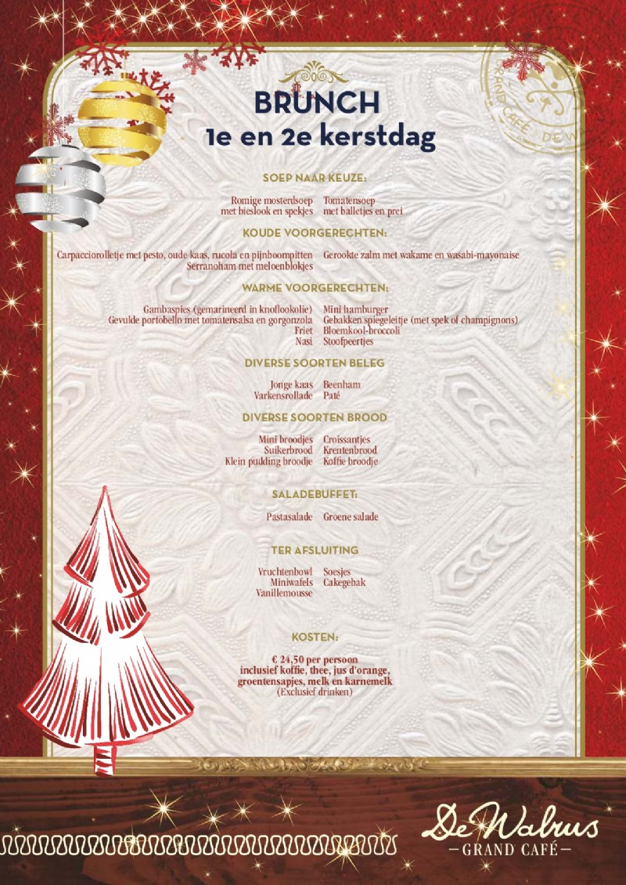

Welkom bij Grand-café de walrus!
Brunch en live cooking
BRUNCH EN LIVE COOKING DINER IN SNEEK! Op Eerste- en Tweede Kerstdag kun je heerlijk brunchen bij De Walrus voor €24,50 per persoon. Je ontvangt een soep naar keuze, er zijn koude en warme voorgerechten, beleg, brood en een heerlijk toetje. Oh niet te vergeten: deze prijs per persoon is inclusief koffie, thee, jus 'd orange en melk. Bekijk het volledige menu hieronder!
